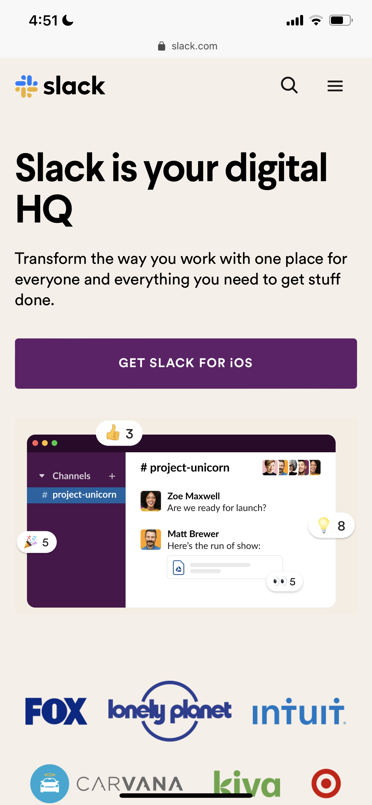
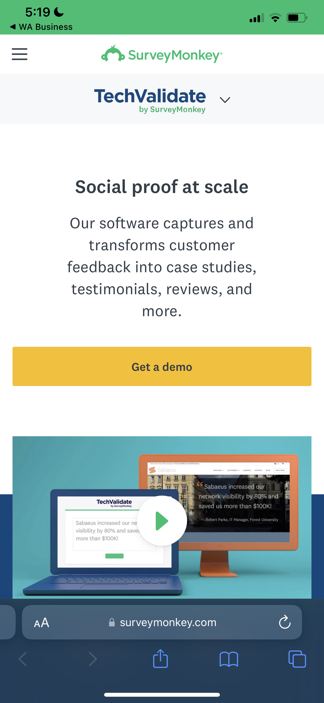

Visual Hierarchy
Slack
Taking Slack.com as exemple, the visual hierarchy is used to rank design the elements and influence in the order you want your users to view them. By using principles like contrast, scale, balance and, more you can help establish each element in its rightful place and help the most important elements stand out.
Rule of Thirds
Tech Validate /Survey Monkey
Here, TechValidate chooses to put their important text close to the #1 spot, closely followed by a call to action near the #2 point.The Rule of Thirds web design technique is used for creating pleasing aesthetics and balance in images. It basically says that placing items of interest on the “thirds” of an image is more pleasing to the eye than centering or more other symmetrical approaches. This is especially true with responsive web design, as different mobile devices will change where things sit.
PARC: Alignment
Shopify

Shopify’s latest homepage design is quite boxy. The different sections and their contents are well-defined thanks to this left-aligned layout style. For the most part, many of the sections use a simple grid system to align the content which is quite reminiscent of the old-style left-aligned web designs.